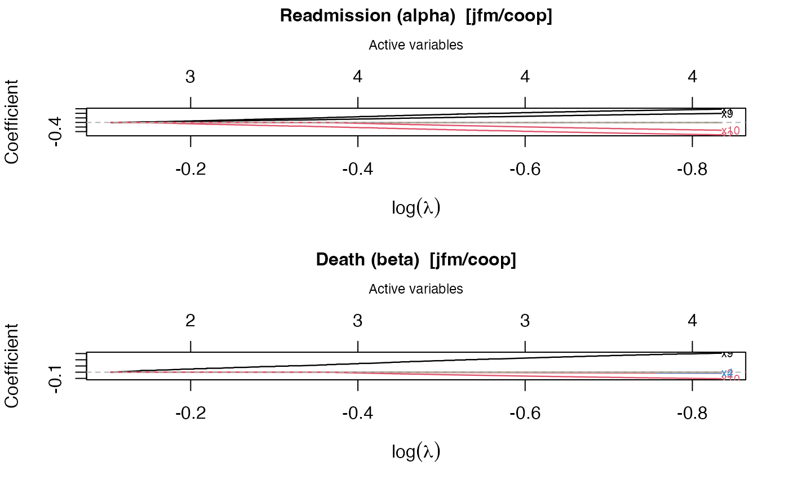

Plot a Stagewise Coefficient Path
plot.swjm_path.RdProduces a glmnet-style plot of coefficient trajectories versus \(\log(\lambda)\) along the stagewise regularization path. Two panels are drawn by default: one for the readmission sub-model (alpha) and one for the death sub-model (beta). The top axis of each panel shows the number of active variables at that lambda.
Arguments
- x
An object of class
"swjm_path".- log_lambda
Logical. If
TRUE(default), the x-axis is \(\log(\lambda)\); otherwise raw \(\lambda\).- which
Character. Which sub-model(s) to plot:
"both"(default),"readmission", or"death".- col
Optional vector of colors, one per covariate. Recycled if shorter than
p.- ...
Currently unused.
Examples
# \donttest{
dat <- generate_data(n = 50, p = 10, scenario = 1, model = "jfm")
fit <- stagewise_fit(dat$data, model = "jfm", penalty = "coop",
max_iter = 200)
plot(fit)

# }